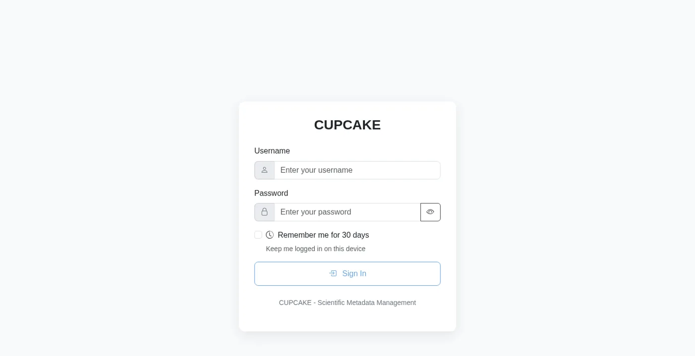
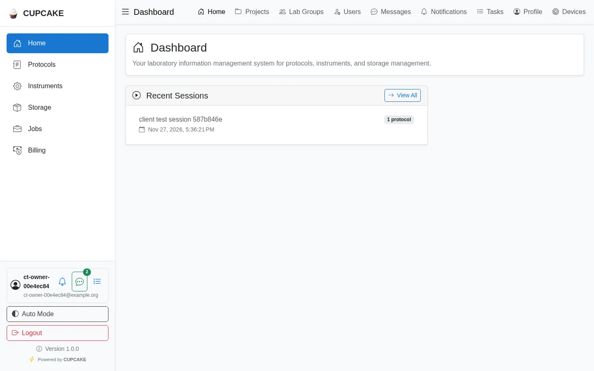

Cupcake keeps a laboratory's protocols, experiment sessions, instruments, reagent storage and instrument jobs, with the sample metadata of each job.
Signing in
Sign in with your username and password, or with ORCID when the site allows it. New users create an account when the site allows registration; otherwise an administrator creates it.

The dashboard
After signing in, Cupcake opens on the dashboard: your recent sessions and messages, a running timer and your unread notifications.

The navigation bar leads to:
- Home: projects, lab groups, messages, notifications, your profile and device tokens.
- Protocols: protocols, sessions and timers.
- Instruments: instruments, their bookings and maintenance.
- Storage: storage locations and the reagents in them.
- Jobs: instrument jobs and their sample metadata.
- Billing and Admin, for staff.
An administrator can hide parts the site does not use.